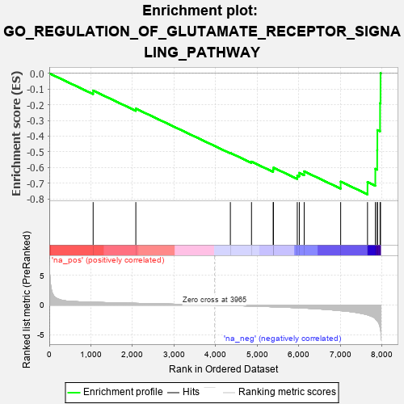
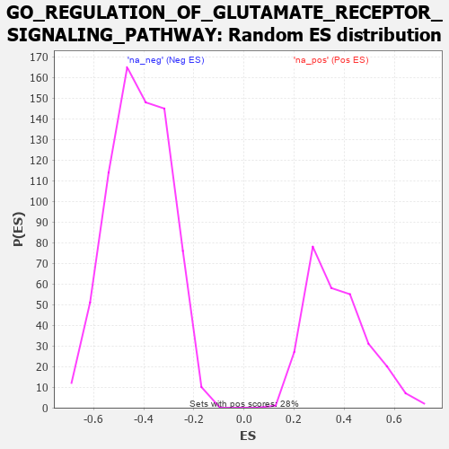

| | | Dataset | 7d |
| Phenotype | NoPhenotypeAvailable |
| Upregulated in class | na_neg |
| GeneSet | GO_REGULATION_OF_GLUTAMATE_RECEPTOR_SIGNALING_PATHWAY |
| Enrichment Score (ES) | -0.7708007 |
| Normalized Enrichment Score (NES) | -1.8359823 |
| Nominal p-value | 0.0 |
| FDR q-value | 0.010565409 |
| FWER p-Value | 0.25 |
Table: GSEA Results Summary

Fig 1: Enrichment plot: GO_REGULATION_OF_GLUTAMATE_RECEPTOR_SIGNALING_PATHWAY
Profile of the Running ES Score & Positions of GeneSet Members on the Rank Ordered List
| PROBE | GENE SYMBOL | GENE_TITLE | RANK IN GENE LIST | RANK METRIC SCORE | RUNNING ES | CORE ENRICHMENT | | 1 | MEF2C | | | 1054 | 0.473 | -0.1099 | No |
| 2 | LRRC7 | | | 2080 | 0.294 | -0.2248 | No |
| 3 | ADRB2 | | | 4352 | -0.068 | -0.5070 | No |
| 4 | DLG1 | | | 4860 | -0.169 | -0.5626 | No |
| 5 | GRIN1 | | | 5381 | -0.291 | -0.6141 | No |
| 6 | DLG4 | | | 5388 | -0.293 | -0.6009 | No |
| 7 | ACTN2 | | | 5960 | -0.458 | -0.6509 | No |
| 8 | NETO2 | | | 6009 | -0.475 | -0.6343 | No |
| 9 | DLG2 | | | 6126 | -0.513 | -0.6245 | No |
| 10 | CCR2 | | | 7003 | -0.939 | -0.6899 | No |
| 11 | GRIA3 | | | 7648 | -1.642 | -0.6926 | Yes |
| 12 | GRIA1 | | | 7836 | -2.260 | -0.6084 | Yes |
| 13 | FYN | | | 7881 | -2.622 | -0.4891 | Yes |
| 14 | GRIA2 | | | 7885 | -2.684 | -0.3617 | Yes |
| 15 | DAPK1 | | | 7950 | -3.767 | -0.1903 | Yes |
| 16 | GRIA4 | | | 7961 | -4.049 | 0.0013 | Yes |
Table: GSEA details [plain text format]

Fig 2: GO_REGULATION_OF_GLUTAMATE_RECEPTOR_SIGNALING_PATHWAY: Random ES distribution
Gene set null distribution of ES for GO_REGULATION_OF_GLUTAMATE_RECEPTOR_SIGNALING_PATHWAY